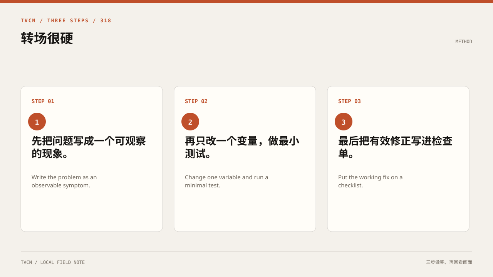

现场
找动作、声音或形状的接点；白闪只能救一次。
怎么做
- 在上一镜末尾留一个未完成的动作，下一镜接后半段。
- 用声音先到或后到，把两个空间连起来。
- 找相同形状、颜色或构图做匹配剪辑。
别踩
别用白闪或旋转台标当万能胶；用多了会出戏。
DIAGRAM / Method card
三步流程

三种原因
针对“转场很硬”，先按三个方向排查；每次只改一个变量，改完录 30 秒对比，看变化跟着哪个环节走。
| 原因 | 现场信号 | 5 分钟验证 |
|---|---|---|
| 只有硬切 | 每个转场都是 cut，时间/空间没有桥 | 给转场加一个动作或声音桥 |
| 前后信息不接 | 上一场结束在 A，下一场突然到 B | 让结尾和开头共享一个对象 |
| 音乐硬切 | 画面切了，音乐还在上一段 | 让音乐在转场前收或延 |
现场诊断
- 把每个转场前后各 3 秒单独放，写下观众已知和未知。
- 检查转场前后是否有同一个动作、物件或声音。
- 关掉音乐，看画面本身是否还能过渡。
修法
转场不是遮住时间，是交代时间。先找到一个共同的锚点：动作、物件、声音或视线。
- 用动作匹配：上一场关门，下一场开门。
- 用声音桥：上一场的环境声延续到下一场开头。
- 用视线匹配：人物看某物，下一场切到那个物件。
- 留 2 秒 tail/head，让剪辑有呼吸；不要每个转场都加特效。
失败案例
处理“转场很硬”时，下面三种做法会更糟；先选一个替换动作，别同时改三个变量。
| 失败做法 | 为什么会更糟 | 替换动作 |
|---|---|---|
| 滥用叠化 | 叠化让时间变慢，和叙事速度打架 | 只在时间跳跃时用 |
| 加 whoosh | 音效遮住了逻辑，观众还是不知道到了哪里 | 先建立空间/时间锚点 |
| 每场都淡入淡出 | 片子像 PPT | 保留硬切，只修信息断点 |
验收表
验收不是“感觉好了”，是这四项都能指认、能回放、能记录。
| 验收项 | 通过线 | 记录 |
|---|---|---|
| 锚点 | 每个转场有一个共同动作/物件/声音 | 逐场标记 |
| 时间 | 观众知道过了多久 | 问未看过的人 |
| 空间 | 观众知道到了哪里 | 看建立镜头 |
| 把手 | 转场前后有 2 秒干净画面 | 检查 tail/head |
图片说明：本页封面、图解与步骤图是编辑示意或结构图，不是本页实测照片，也不能当作器材测试证据；AI 辅助生成的图会在图注标出。判断器材或画面，以正文的测试条件与现场记录为准。